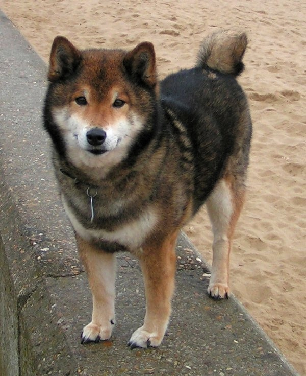
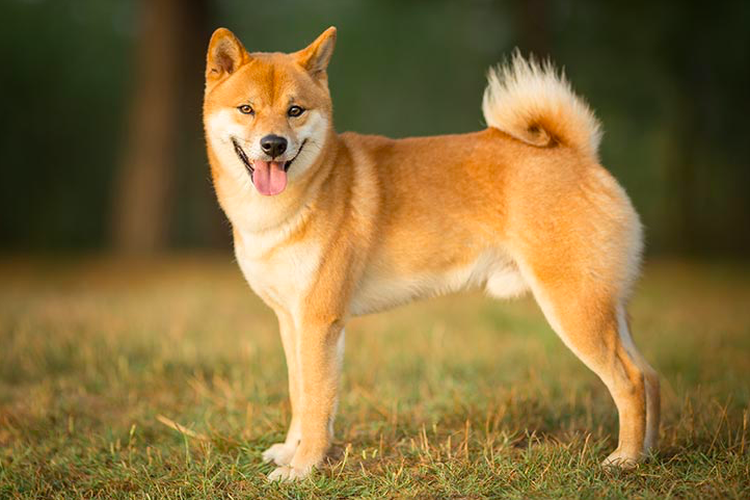
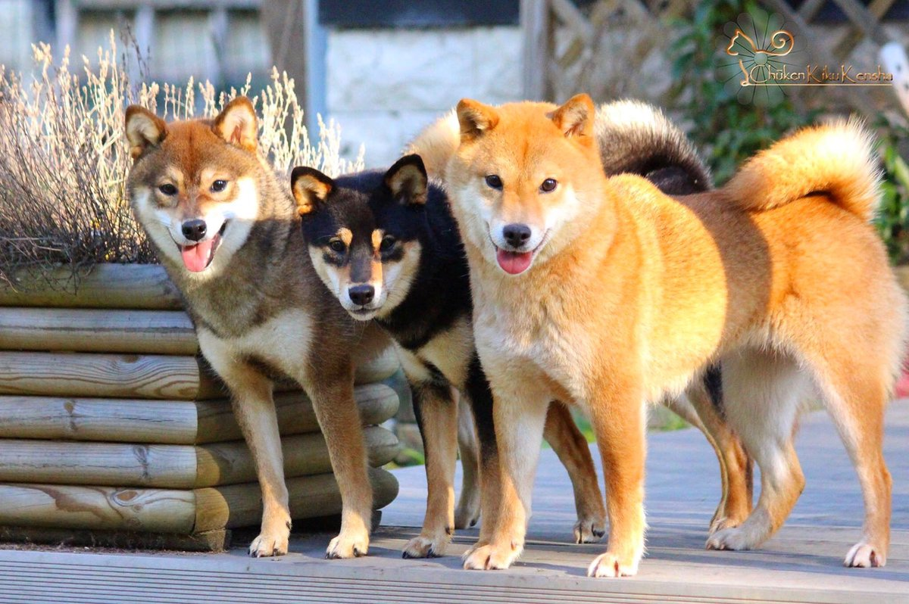

Sejarah
Sejak zaman kuno, Shiba Inu yang dipelihara di berbagai tempat di Pulau Honshu dikelompokkan berdasarkan daerah asal: Anjing Kawakami dari Shinshu, Anjing Hoshina, Anjing Togakushi, Anjing Mino Shiba dari Mino, Anjing Sekishu, dan Anjing Inaba dari wilayah San-in.
Shiba Inu yang dikenal sekarang merupakan hasil kawin silang Shiba Inu dari Shinshu dengan Shiba asal daerah San-in. Kawin silang dilakukan oleh program pelestarian anjing ras Jepang pada awal zaman Showa. Shiba Inu merupakan satu-satunya dari 7 jenis anjing ras pusaka nasional Jepang yang tidak lagi mencantumkan nama daerah tempat asal.
Asal Usul
Menurut catatan sejarah, profil Shiba Inu dimasukkan ke dalam majalah terbitan Perkumpulan Pelestari Anjing Jepang di awal zaman Showa. Dalam bahasa Jepang, shiba berarti kayu bakar (seperti dalam kata shiba kari, mengumpulkan kayu bakar). Kayu bakar diambil dari berbagai jenis semak-semak yang tumbuhnya tidak tinggi.
Ada berbagai macam teori tentang asal usul nama Shiba Inu, namun ada 3 teori yang paling dikenal.
Teori pertama mengatakan anjing ini dinamakan Shiba Inu pintar menerobos semak-semak (shiba) sewaktu menemani berburu. Teori kedua, warna bulu yang cokelat kemerah-merahan bagaikan terbakar matahari dikatakan mirip warna ranting semak-semak kering (dari asal kata shiba aka atau merah semak-semak). Sementara itu, teori ketiga mengatakan ukuran tubuh anjing yang "kecil" (bahasa Jepang kuno untuk "kecil" adalah shiba). Teori lain mengatakan anjing ini berasal dari kampung Shiba di wilayah Shinshu
Ciri-Ciri Umum
Shiba Inu memiliki bulu berwarna cokelat kemerah-merahan, walaupun ada juga Shiba Inu dengan bulu berwarna hitam, dengan lapisan bulu sebelah dalam berwarna coklat muda hingga abu-abu. Bulu pendek terdiri dari dua lapis, lapis atas yang kasar dan lapis dalam yang tebal dan halus. Lapis dalam rontok dan digantikan bulu baru sebanyak dua hingga tiga kali setahun. Kuping berdiri dan ekor melengkung.
Sifat Khusus
- Tahan terhadap 4 kali perubahan cuaca di Jepang yang ekstrem, dingin membeku di musim dingin, suhu panas dengan kelembaban tinggi di musim panas, serta curah hujan yang tinggi.
- Pada umumnya Shiba Inu cocok dijadikan anjing penjaga karena pintar dan berani, bersikap sangat awas, tidak mudah menjadi akrab apalagi jinak terhadap orang tidak dikenal, dan sangat setia terhadap majikan.
- Shiba Inu sejak zaman dulu digunakan sebagai anjing teman berburu hewan kecil di daerah pegunungan, lembah dan kaki gunung, tapi sekarang hanya sebagai anjing peliharaan.
- Shiba Inu ukuran kecil disebut Mame Shiba (Shiba kecil). Ukuran tubuh Mame Shiba lebih kecil dibandingkan Shiba Inu biasa. Mame Shiba cocok sebagai anjing peliharaan karena tetap mempertahankan sifat-sifat asli Shiba Inu. Walaupun demikian, Mame Shiba sering bersifat lebih bersahabat terhadap orang yang tidak dikenal. Selain itu, Mame Shiba hanya merupakan sebutan untuk Shiba Inu ukuran kecil dan bukan jenis anjing baru.